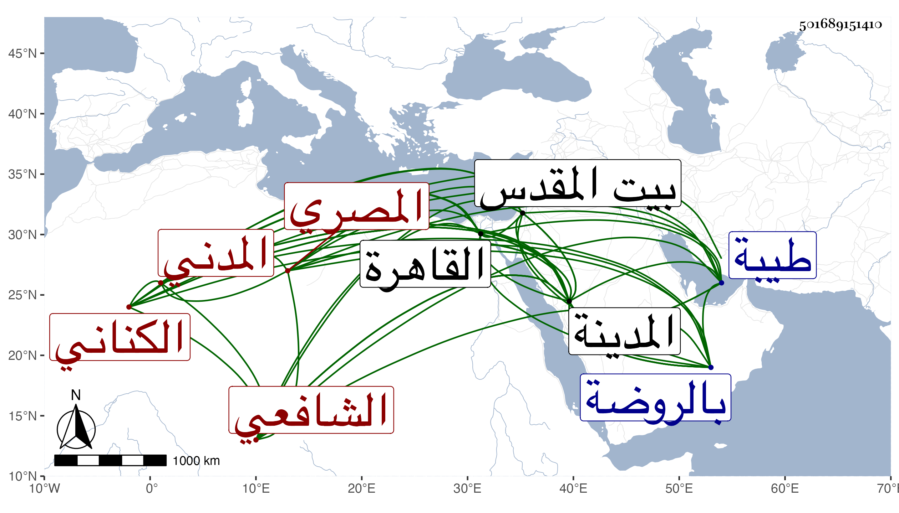

0902Sakhawi.DawLamic.ITO20230111-ara1.EIS1600.501689151410
Biography ID: 501689151410
9
محمد بن عبد الرحمن بن محمد بن صالح بن إسمعيل بن إبراهيم بن أحمد بن حسن بن علي بن صلح فتح الدين أبو الفتح بن ناصر الدين أبي الفرج بن الشمس ابن الخطيب التقي أبي البقاء الكناني بل زعم أنه هاشمي المصري الأصل المدني الشافعي الماضي أبوه ويعرف كسلفه بابن صلح . ولد في ليلة ثاني عشر ربيع الأول سنة تسع وتسعين وسبعمائة بالمدينة ونشأ بها فحفظ القرآن وقال إنه تلاه للعشر من طريق النشر على ابن الجزري مصنفه والحاوي وجمع الجوامع والجمل للزجاجي وألفية العراقي الحديثية ، وعرض على جماعة واشتغل في الفقه على والده والجمال الكازروني والنجم السكاكيني ويوسف الريمي اليمني والشمس الغراقي والجمال بن ظهيرة في آخرين وعن النجم أخذ الأصول مع المعاني والبيان وكذا أخذ الأصول مع العربية والمنطق عن أبي عبد الله الوانوغي وعنه وعن غيره أخذ النحو وكذا أخذ الحاجبية وغيرها عن أبي الحسن علي بن محمد الزرندي تلميذ المحب بن هشام وقرأ عليه الترمذي وكذا قرأ البخاري وغيره على أبيه وحسن الدرعي وفتح الدين النحريري وخلف المالكي وغيرهم كابن الجزري فإنه قرأ عليه في سنة ثلاث وعشرين بالمدينة الشفا وغيره وسمع عليه الحصن الحصين له وكذا سمع على أبي الحسن المحلي سبط الزبير وقبل ذلك جميع البخاري على الزين المراغي في آخرين من المدنيين والقادمين إليها كالجمال بن ظهيرة والمجد اللغوي وأجاز له في سنة خمس فما بعدها ابن صديق وعائشة ابنة ابن عبد الهادي والعراقي وولده والهيثمي وابن الشرائحي والشهابان ابن حجي والحسباني وآخرون كالفرسيسي والجوهري وعبد الكريم بن محمد الحلبي وأبي الطيب السحولي وأبي اليمن الطبري وغيرهم تجمعهم مشيخته تخريج التقي بن فهد وهي في مجلد اقتصر فيها على المجيزين ، وناب في القضاء والخطابة والإمامة ببلده طيبة عن أبيه ثم استقل بذلك بعد موته واستمر إلى أثناء سنة أربع وأربعين فترك القضاء لأخيه الآتي واقتصر على الخطابة والإمامة مع نظر المسجد النبوي حتى مات ، وقدم القاهرة بسبب اتهامه بالمواطأة على قتل أبي الفضل المراغي أخي أبي الفتح وأبي الفرج الماضي ذكرهم وزار بيت المقدس ، وكان ذكيا مسددا في قضائه كريما من دهاة العالم ذا سمت حسن وملقي جميل مع فضيلة في الفقه ومشاركة في غيره وسهولة للنظم بحيث كان قد ابتدأ نظم القراآت العشر من طرق ابن الجزري في روي الشاطبية ونحوها مع التصريح بأسماء القراء نظما منسجما واختصارا حسنا لو كان سالما من اللحن لقيته بالمدينة النبوية فأخذت عنده . ومات بها في ليلة الجمعة رابع عشري جمادى الأولى سنة ستين وصلى عليه بعد صلاة الصبح بالروضة ودفن بمقبرتهم بالقرب من السيد عثمان على قارعة الطريق ، وهو في عقود المقريزي ونسب المشيخة لعمر بن فهد ووصفه بصاحينا رحمه الله وعفا عنه .
